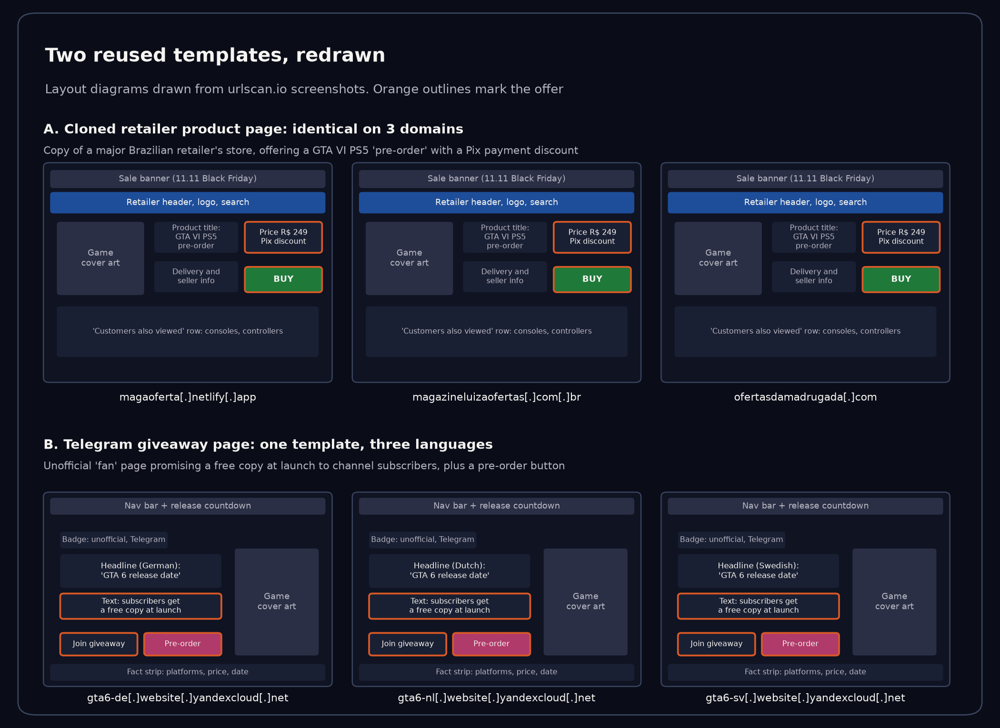
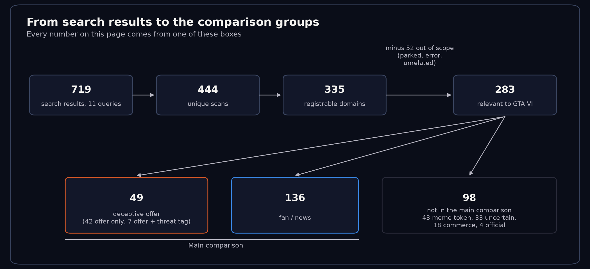
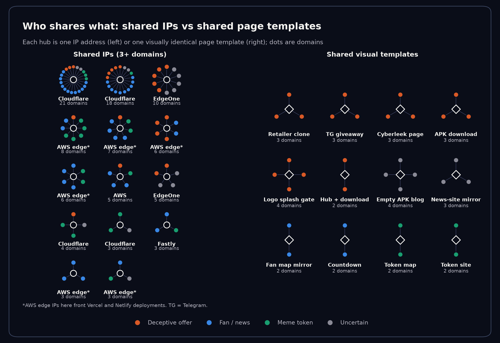
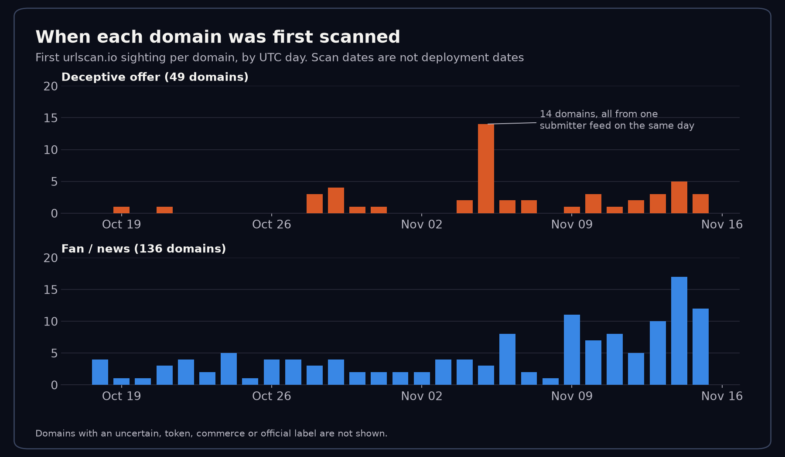

Summary
- What was investigated: 283 relevant GTA VI-themed domains from public urlscan.io scans, each labelled from its archived screenshot, comparing 49 deceptive-offer sites with 136 fan and news sites.
- What was found: 17% of relevant domains (95% CI 13-22%) made a deceptive offer, most often a fake download or PC/mobile "port". Shared IP addresses did not separate the groups (45% vs 43%), because almost all of them belong to big hosting platforms. Reused page designs did: 29% of deceptive-offer domains shared a visually identical template with another domain, against 3% of fan sites.
- Why it matters: for this kind of lure, IP overlap mostly reflects shared hosting. Repeated page designs were the more useful lead for finding related sites, provided they are treated as a reason to look closer, not as proof.

Background
Grand Theft Auto VI is due on November 19, 2026, for PlayStation 5 and Xbox Series X|S. There is no PC or mobile version and no public beta. That gap is what scam sites sell into. Malwarebytes reported paid "VIP early access" pages, Bitdefender flagged fake "beta" downloads promoted through social ads, and later reporting described more early-access and pre-order lures ahead of launch (sources).
Those warnings describe individual examples or rely on vendor telemetry that outsiders can't inspect. The question here is one that public data can answer:
Among publicly scanned GTA VI-themed websites, what share show a deceptive offer, and do those sites reuse infrastructure or page templates more often than fan and news sites?
Data & methodology
Source. The urlscan.io search API, queried on November 16, 2026, for the 29 completed UTC days from October 18 to November 15, 2026. Eleven narrow queries were run, each limited to that window:
- domain prefixes:
page.domain:gta6*,gtavi*,gta-6*,gta-vi*,gta6-*,gtavi6*,grandtheftauto6*, andtask.domain:gta6* - page titles:
"GTA VI","GTA 6","Grand Theft Auto VI","Grand Theft Auto 6"
Each query was paged to the end and logged (query_log.csv).
From scans to domains. The same scan often matches
several queries, so the 719 results collapse to 444 unique scans.
These map to 335 registrable domains using the Public Suffix List
(the shared list of suffixes such as .co.uk or
pages.dev under which anyone can register a site). Each
*.pages.dev, *.netlify.app,
*.vercel.app, Tencent EdgeOne or Yandex Cloud deployment
counts as its own site. The earliest scan represents each domain.

Evidence used. Labels come from urlscan's archived screenshot (available for 315 of 335 domains), the page title and any tags the scan's submitter added. No live suspicious page was visited and nothing was downloaded.
Labelling rubric. Each domain got one label. A screenshot can show that a page makes an offer that can't be genuine. It can't show what happens after someone clicks. So the rubric keeps three things apart: what the page offers, what third parties tagged it as, and what was actually confirmed (nothing here: no payment flow, download or credential form was tested). A GTA-related name, a shared host or a threat tag on its own never earned a deceptive label.
| Label | Rule | Domains |
|---|---|---|
| Official | Rockstar, Take-Two, or platform-holder page | 4 |
| Fan / news | Press, wiki, map, countdown, community or tool with no deceptive offer | 136 |
| Deceptive offer | Screenshot shows an offer that can't be genuine: a PC or mobile build, early access, free keys or copies, an "official" pre-order on a lookalike domain, a retailer clone, or an in-game money generator | 42 |
| Deceptive offer + threat tag | As above, and a strong third-party threat tag on the scan (malicious, scam, drainer, threat, or phishing not paired with the weaker possiblethreat). The tag adds a second opinion; it does not confirm behaviour. | 7 |
| Meme token | GTA VI-themed crypto token with no claim of game access | 43 |
| Commerce | Established retailer, ticketing, merchandise, or clearly disclosed paid product | 18 |
| Uncertain | Ambiguous purpose, tag with no visible offer, or title-only evidence | 33 |
| Out of scope | Parked, error, placeholder, unrelated, or no archived content | 52 |
The main comparison is the 49 deceptive-offer domains (both deceptive rows) against the 136 fan/news domains. Fan sites are a reference group, not a matched control.
Within-reviewer repeatability. A seeded random 20% of relevant domains (57) was labelled a second time, in shuffled order with the first labels hidden. The passes matched on 55 of 57 (96.5%; Cohen's κ = 0.95, an agreement score corrected for chance). Both passes were done by the same reviewer, so this shows the rubric was applied consistently. It is not independent validation; a second labeller on a stratified sample would be the next step.
Signals compared.
- Shared IP: the page's IP address also served at least one other relevant domain.
- Shared IP off CDN/PaaS: the same, excluding big content-delivery and site-hosting platforms (Cloudflare, AWS edges used by Vercel and Netlify, Fastly/GitHub Pages, Google, Akamai, Microsoft, Tencent EdgeOne, Yandex Cloud). On those platforms one IP fronts thousands of unrelated customers.
- Hosting network (ASN): the autonomous system, roughly "which company's network", that announced the page's IP.
- Template reuse: the domain belongs to a family of two or more sites with a visually identical page, judged from screenshots. Exact-title matches are reported separately because they miss translated copies.
- New domain: registered under 30 days before the first scan. Only independently registered domains count, since urlscan reports the platform's age for subdomain sites (1,436 days for every
*.edgeone.devpage).
Percentages carry 95% Wilson intervals (a confidence interval that behaves well for small counts). Differences use Newcombe's interval for the gap between two proportions, and p-values come from Fisher's exact test, which asks how likely a split this lopsided would be if the two groups really had the same rate.
Finding 1: about one in six relevant sites made a deceptive offer

Of 283 relevant domains, 49 (17.3%, CI 13.4-22.2%) made a deceptive offer. Counting all 33 uncertain domains as deceptive gives an upper bound of 82 (29.0%, CI 24.0-34.5%). Fan and news sites were the largest group (136, 48%), followed by GTA VI meme tokens (43, 15%), which mostly made no claim about game access.
Reading the interval. The 13-22% range covers random variation for a sample of this size. It doesn't cover the bigger source of error: urlscan only holds pages someone chose to scan, and security feeds submit suspicious pages far more often than fan pages. The true share across the whole GTA VI web could sit well outside this range.
The most common lure was a fake download, early-access build, or PC/mobile "port" (20 domains): APK pages, Windows installers, and "Cyberleek" pages selling a supposed leaked build. These only work because the game has no PC or mobile release. Next came giveaways and "free code" pages (13), which ask for an email, a console choice, a survey or a Telegram join before a "reveal", then fake pre-order stores (9), including three identical copies of a Brazilian retailer's product page.
Finding 2: shared IPs don't separate the groups; shared templates do

| Signal | Deceptive | Fan / news | Difference (pp) | Fisher p |
|---|---|---|---|---|
| Visual template reuse | 14/49 (28.6%) | 4/136 (2.9%) | +25.6 [14.0, 39.6] | <0.001 |
| Shared IP, any network | 22/49 (44.9%) | 58/136 (42.6%) | +2.3 [−13.3, 18.2] | 0.87 |
| Shared IP, off CDN/PaaS | 2/49 (4.1%) | 0/136 (0.0%) | +4.1 [0.0, 13.7] | 0.07 |
| Exact page title shared | 5/49 (10.2%) | 4/136 (2.9%) | +7.3 [0.0, 19.0] | 0.06 |
| Major CDN/PaaS network | 34/49 (69.4%) | 115/136 (84.6%) | −15.2 [−30.0, −2.0] | 0.03 |
| Free-platform subdomain | 9/49 (18.4%) | 24/136 (17.6%) | +0.7 [−10.4, 14.8] | 1.00 |
| Registered <30 days before scan | 11/40 (27.5%) | 50/112 (44.6%) | −17.1 [−31.8, 0.6] | 0.06 |
Shared IPs. 45% of deceptive domains shared an IP with another domain in the sample, and so did 43% of fan sites. In practice, an analyst pivoting on IP would pull in about as many fan sites as scams. The biggest shared IPs are Cloudflare and AWS edge addresses carrying fans, tokens and scams side by side (left panel below). Off those platforms, only one pair of domains shared an IP: two fan-styled "GTA 6 Hub" pages with the same layout and a "Download page" button.
Hosting. Deceptive sites were somewhat less often on a big CDN or site-hosting platform (69% vs 85%), meaning more of them sat on ordinary hosting or servers. The difference is modest and its interval nearly reaches zero.
Templates. 14 deceptive domains fall into five template families:
- three copies of a Brazilian retailer's GTA VI product page, on Netlify and lookalike domains (case study A above);
- three Yandex Cloud pages with the same Telegram "free copy" giveaway in German, Dutch and Swedish (case study B);
- three "Cyberleek" terminal-style pages selling a leaked build or a token-gated demo;
- three pink "GTA 6 APK v8.1.5 Beta" download pages;
- the "GTA 6 Hub" download pair.
The four fan sites in template families are two sites each deployed twice: a map mirrored on Cloudflare Pages and a countdown with its own Netlify preview. In practice, a page design seen on more than one domain was mostly a deceptive-offer design in this sample.

Does the template result survive stricter counting?
The domain-level test treats every domain as independent. Domains in one template family are not independent: three copies of one page are closer to one observation than three. Two stricter versions handle that. The first counts mirrors of one website (same site on a second platform, a deploy preview, an identical IP and title copy, or the same page in another language) once. The second counts every template family once, whatever its size.
| Unit of analysis | Deceptive | Fan / news | Difference (pp) | Fisher p |
|---|---|---|---|---|
| Domain (main analysis) | 14/49 (28.6%) | 4/136 (2.9%) | +25.6 [14.0, 39.6] | <0.001 |
| Mirrors collapsed | 9/46 (19.6%) | 0/134 (0.0%) | +19.6 [10.2, 33.2] | <0.001 |
| Each template family counted once | 3/40 (7.5%) | 0/134 (0.0%) | +7.5 [1.8, 19.9] | 0.01 |
Collapsing mirrors removes every fan-site match, because both fan families were one site deployed twice. The deceptive families that remain are copies on genuinely different domains. Counting each family once is deliberately harsh and leaves only three reused designs, but the gap stays above zero. Treat the p-values on this page as exploratory: the domains were not randomly sampled, and the stricter tests show the effect is smaller once related sites are grouped. Results: dedup_template_reuse.csv.
| Deceptive group definition | n | Template reuse | Fan/news | Difference (pp) | p |
|---|---|---|---|---|---|
| Main (both deceptive labels) | 49 | 28.6% | 2.9% | +25.6 [14.0, 39.6] | <0.001 |
| Including all uncertain domains | 82 | 30.5% | 2.9% | +27.5 [17.6, 38.3] | <0.001 |
| High-confidence labels only | 33 | 21.2% | 3.1% | +18.1 [6.6, 34.7] | 0.002 |
Changing who counts as deceptive moves the numbers but not the direction. The shared-IP comparison is not significant under any definition. Domain age runs the other way from the usual assumption: deceptive domains were, if anything, less often freshly registered than fan sites (27.5% vs 44.6%). Many fan countdowns and maps went up in the last weeks before launch, while a cluster of deceptive domains was registered 55-71 days before first scan, in early-to-mid September. Full results: sensitivity.csv.
Finding 3: third-party tags are a lead, not a label
22 relevant domains carried a strong third-party threat tag: 7 deceptive-offer sites, 13 uncertain, 1 meme token and 1 fan site. Where tags and screenshots disagreed is the useful part:
- All 15 EdgeOne deployments carried the same
phishing|malicioustag pair from one submission stream. Two showed a fake download. The other 13 showed a bare GTA VI logo or cover image, a countdown, a gallery or an unrelated browser game, and are labelled uncertain. The tagging looks pattern-driven rather than based on page content. - An automated feed tagged one fan editorial site
threat|phishingand several fan guidespossiblethreat|phishing, with nothing deceptive on screen. - 42 of the 49 deceptive-offer sites had no strong tag at all, including the retailer copies and APK pages.
When the sites were first seen

Fan and news sites were first scanned at a rising rate as launch
approached. Deceptive sites show no steady build-up. Instead there
is one spike: 14 on November 5, every one of them carrying the same
submitter tag (hybridanalysis). That spike reflects one
feed sweeping for GTA VI lures on one day, not 14 sites going live
at once. Scan timing in urlscan says as much about who is looking
as about what is deployed.
Detection implications
If an analyst flagged every domain whose page design matched another domain's, then within this two-group sample 14 of the 18 flagged domains would be deceptive (77.8% precision), and 35 of 49 deceptive domains (71%) would be missed. The 77.8% figure only holds for this sample. Real traffic has a different mix of fan, scam and unrelated pages, so precision in production would differ, probably downward.
Template similarity works best as a prioritisation signal: once one lure is confirmed, finding its visual siblings is cheap and the siblings are likely to be related lures. It is not a stand-alone detector and does not prove common ownership.
Investigative pivots.
- Observed in this data: identical page layouts across domains; identical page titles, including the full retailer product title; the same page translated into several languages; deployments on free platforms (Netlify, Yandex Cloud, EdgeOne) alongside lookalike registered domains; the "Cyberleek" brand name reused across three TLDs.
- Proposed for future collection: screenshot perceptual hashes to automate the template matching done by eye here; DOM and script-structure fingerprints; redirect chains, payment and download destinations; registration records and certificate transparency logs for the independently registered domains.
Investigation notes
- Tags never set a label on their own. Fifteen EdgeOne deployments all carried strong
phishing|malicioustags. Thirteen of them showed only a GTA VI logo, cover art, a "begin the journey" splash, a countdown or a gallery, with no offer, form or download, so they are labelled uncertain rather than deceptive. Only the two showing a fake download count as "deceptive offer + threat tag". - Archived screenshots instead of live visits. Visiting suspicious pages would have shown more (redirects, payment forms) but risks interacting with live lures and alerting operators. Every label comes from what urlscan had already captured.
- Platform IPs treated as uninformative. The first pass of the shared-IP comparison counted EdgeOne and Yandex Cloud edges as ordinary hosting, which made deceptive sites look clustered. Moving them into the CDN/PaaS group removed almost all of the apparent "off-CDN" sharing.
- Domain age only for registered domains. urlscan reports the platform's age for subdomain sites, so including them would have made every EdgeOne or Netlify page look years old.
Conclusion
I set out to understand whether GTA VI-themed deceptive websites shared infrastructure in ways that could help identify related activity. The results challenged one of the simpler assumptions: shared IP addresses were as common among fan sites as among deceptive ones, mostly because both use the same hosting platforms.
Repeated page designs were a more useful signal in this dataset. 29% of deceptive-offer domains reused an identifiable visual template, against 3% of fan and news domains, and the gap held, though smaller, when related deployments were grouped together. That doesn't establish common ownership or show that template matching would work as well outside this sample. It does suggest visual similarity deserves a place next to traditional infrastructure indicators.
The next step is to test whether the pattern holds on a larger, independently labelled dataset, and whether redirect, registration and page-structure evidence improves the ability to link related sites.
Limitations
- Submission-biased sample. urlscan only contains pages someone chose to scan. The 17% figure describes this sample, not the GTA VI web as a whole or what people actually encounter.
- Keyword coverage. The prefix and title queries catch obvious lures and miss scams with generic names or titles.
- One month. No year-over-year or pre-announcement comparison. Repeated scans of a page are not new attacks.
- Screenshot evidence. Labels rest on one archived screenshot, the title and submitter tags. Seven relevant domains had no screenshot and were labelled from the title alone (low confidence).
- One labeller. All labels and template families were judged by one reviewer. The labels file is published so others can check or re-label.
- Shared infrastructure is not shared ownership. Identical templates can come from a sold kit, an AI site builder or copy-paste as easily as from one operator. Nothing here attributes a site to a campaign or actor, or measures victims or losses.
Sources
- urlscan.io API documentation
- Grand Theft Auto 6 'VIP early access' scam sites are already popping up, Malwarebytes warns (PC Gamer)
- GTA VI fans beware: experts warn a new wave of scam websites is offering early access (TechRadar)
- Gamers beware: there's no such thing as a GTA VI beta version to download (Bitdefender)
- Fake GTA VI download sites push malware ahead of launch (Hackread)
- Public Suffix List
- Newcombe, R.G. (1998). "Interval estimation for the difference between independent proportions." Statistics in Medicine, 17(8), 873-890.
Data & code
Labelled domains (defanged; label, evidence, second-pass label and infrastructure fields): domains_labeled.csv. Scans: scans.csv. Query log: query_log.csv. Results: group_metrics.csv, sensitivity.csv, dedup_template_reuse.csv, sample_flow.csv, first_seen_daily.csv, offer_types.csv, label_counts.csv, agreement.csv, shared_infra_clusters.csv, title_clusters.csv, asn_by_group.csv.
Pipeline. collect.py queries urlscan and logs each request; prepare.py deduplicates scans and maps registrable domains; analysis.py computes every result from the labels; charts.py draws the figures; verify.py independently recomputes the headline results from the published CSVs. Dependencies: requirements.txt (Python 3.12).
Check the results from the published data (no
API access needed). Download code/ and data/
into one folder, then:
pip install -r code/requirements.txt
cd code
python verify.py ../data # expect "0 mismatches" (52 checks)
python charts.py ../data ../assets # redraws every figure on this pageverify.py rebuilds the shared-IP and template flags
from raw IPs and template families, recomputes every count, Wilson
and Newcombe interval and Fisher p-value in the main and
deduplicated tables, and reconciles the sample-flow totals. It exits
with an error if anything differs.
Re-collecting from scratch runs
python collect.py work, then
python prepare.py work, labelling, and
python analysis.py work data. urlscan search returns a
rolling 30-day history, so a fresh collection after mid-December 2026
covers a different window and needs fresh labels.